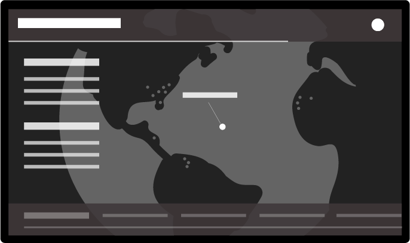

Transport
Transport gives the consumer a global context of their underperforming shipment deliveries and bottlenecks on routes. For simplicity, each transport issue is shown one at a time. The details of each issue appears as a single lane, clearly displaying the origin and destination of a shipment. Further details, e.g. volume, bottleneck details) float left - consistent with all globe-based Situation Room posters in an array.Perspective
Our metrics and insights posters are designed to give the consumer their most essential KPIs in real time. Our goal is to provide clutter-free focus on data that can be viewed by a team effortlessly and, armed with valuable insight, take action with confidence. Graphic visualiztion on the left and highlighted metics float right.Exposure
Exposure gives the consumer a global/local context of events that may touch their supply chain. Unlike Transport, Exposure displays an all-at-once overview of events and the operations (sites) they may affect in an adverse way. The order of events are shown by severity (extreme to moderate) and a detailed listing of site names. locations. and contact information float left. We also draw a continuous news feed of news and updates in a scrolling footer.